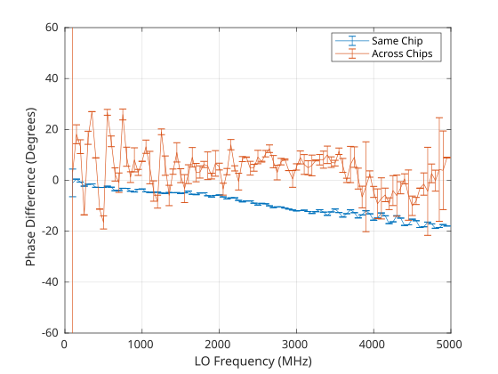
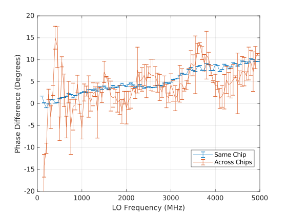

AD-FMCOMMS5-EBZ Hardware

Schematic, PCB Layout, Bill of Materials
Rev. C
Download
AD-FMCOMMS5-EBZ Design & Integration Files
Schematic
PCB Layout
Bill of Materials
Allegro Project (get the Allegro FREE Physical Viewer; you need 17.2 or higher)
Rev. B
Download
Rev B BOMRev B Allegro Board File(This file is compressed). Get the Allegro FREE Physical Viewer (You need 16.5 or higher).
Important
ERRATA:
The FMCOMMS5, REV B has a bug in it, that doesn’t allow the ADF5355 to function properly. (Pin 5, AVDD is a floating node). It’s a simple fix - short pin 5 (AVDD) with pin 4 (CE) to make a connection to VDD_EXT_LO_3P3.

I/O Voltage
The AD-FMCOMMS5-EBZ (AD9361) assumes a VDD_INTERFACE voltage between 1.71V and 2.625V (1.8 to 2.5 +/- 5%), so on your FPGA carrier board, you should ensure that VADJ is between these levels. Setting things to 3.3V will damage the part.
Phase Synchronization
Traces between baluns and SMAs are not phase-matched on REV-A and REV-B which can cause phase misalignment with the libad9361-iio ad9361_fmcomms5_phase_sync solution. This is corrected on REV-C. Therefore, phase alignment performance can vary over frequency. The RF switches on REV-A/B are also not designed to work above 900 MHz. Higher frequency switches are available on REV-C.
Below are some preliminary results using Release 2018-R1 with equal length but unmatched cables
Rev B

Rev C
